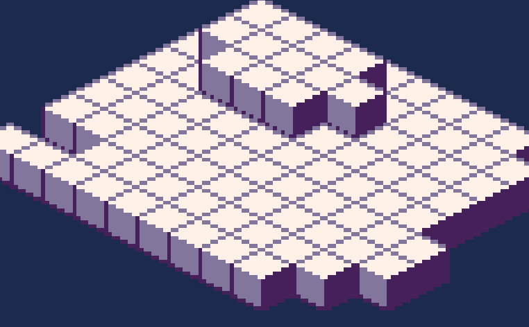

experimenting with real time strategy
hi all,
the project hopping hasnt gotten better
this month i put together the start to a real-time strategy game. i dont plan to turn this into anything final, i just made it to see how it would work.
the units use art from Fire Emblem: Shadow Dragon. the rest of the art is mine. i started with basic isometric blocks to draw a map.
i set up a camera that could pan around the map and zoom in and out. i added units the player could select with the mouse, and set up some simple pathfinding. the pathfinding is similar to what i talked about back in may. then i created some enemies and set up some basic logic for the units to follow. the logic flows like this:
if not moving and not attacking:
check if the nearest enemy is within awareness range
if so, move towards them and attack them
else if attacking:
if the target is alive:
if the target is out of range:
move towards the target
else:
attack the target
else:
stop attacking
else if moving:
if the position has not been reached and
a nearer position can be reached and
i am not being attacked:
move
else:
stop moving
the player’s units and enemy units use the same logic, with the exception that the player can manually set move/attack targets for their own units.
finally, i set up the fog of war. every tile has three states:
- unexplored. no player unit has had awareness here. nothing visible
- visible. a player unit currently has awareness here. tile is visible and units move normally
- explored. a player unit once had awareness here but no longer does. tile is rendered faded. enemies will remain visible, but their position will not visually update, showing the player the last known location.
when drawing the map, the game draws a translucent black layer over the explored areas, and a solid black layer over the unexplored areas.
thats pretty much the whole thing. the next feature i would work on is making buildings functional- allowing the player to place buildings and set buildings to spawn more units.
instead im going to keep hopping and move onto something different.
im putting Silver Key on hiatus. i will definitely be back for Phase III, but i need a change of pace.
i will continue working on Micah on and off
Orbital Terminus was intended to be a small project i could get out quickly, but if youve been reading these devlogs, you know how that goes. the only thing to finish are some enemies and bosses.
its weird writing a devlog for a game i will never finish (or at least a game i dont intend to finish). i want to be able to take detours like this, and i want to be more transparent about what im actually working on, even if it has no deliverable.
thank you for reading. ill see you next time with a new detour.
- ciaran